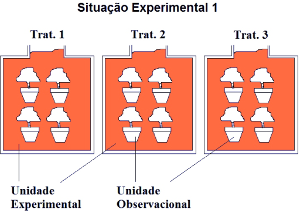
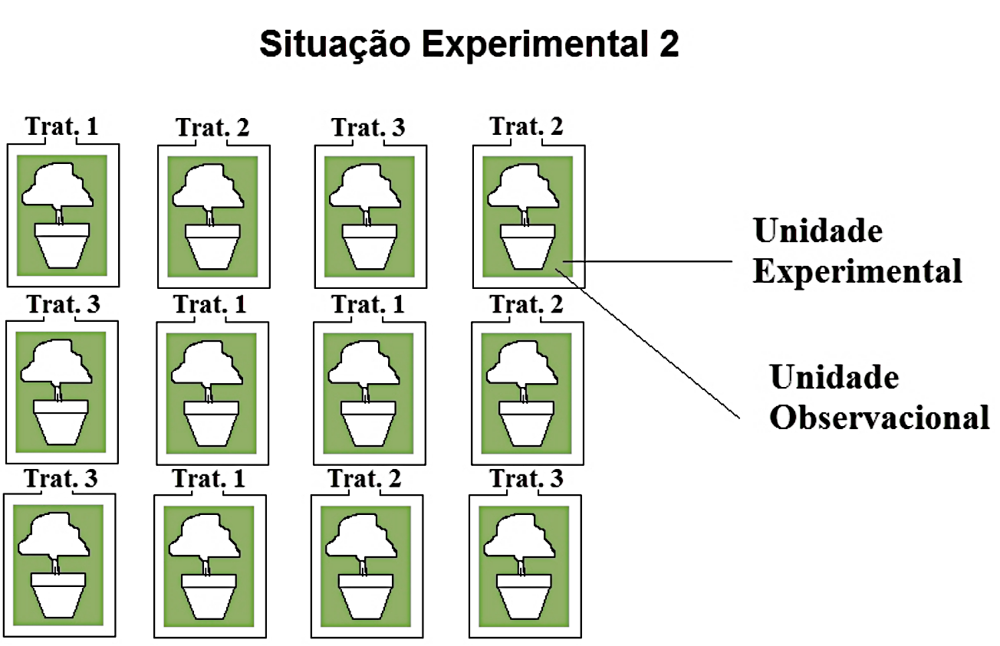
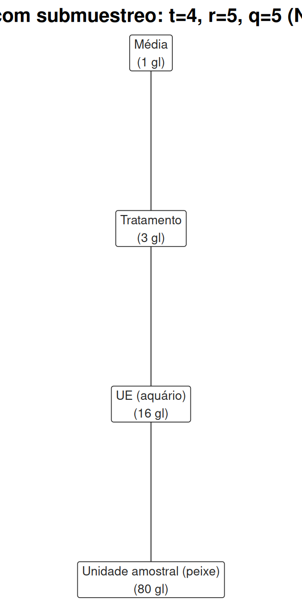
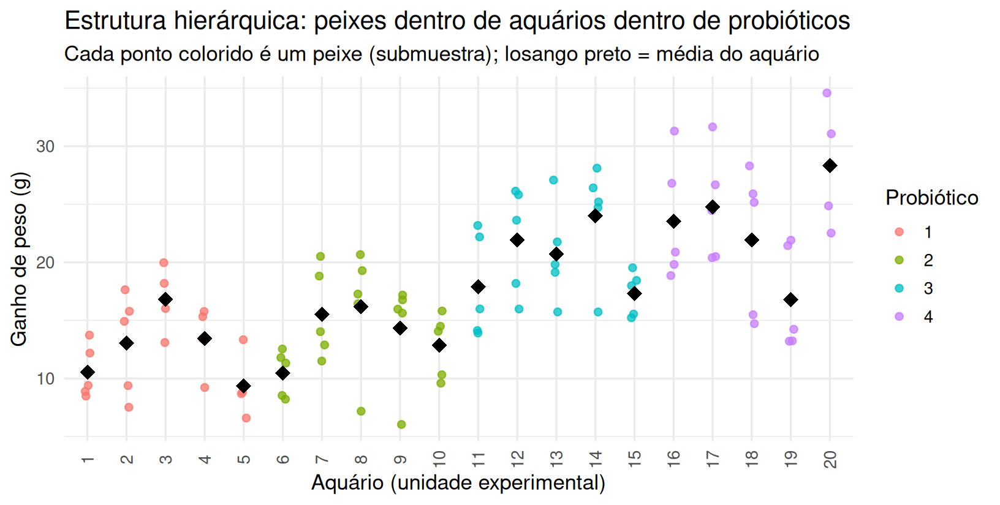

3.3 Submuestreo em um DCA
Retomamos aqui, com rigor, a distinção entre unidade experimental (UE) e unidade amostral introduzida no Capítulo 1 (Seção 1.2): quando uma UE é medida mais de uma vez — várias tentativas de um mesmo sujeito, vários peixes do mesmo aquário, várias leituras do mesmo lote — dizemos que há submuestreo. As submuestras não são réplicas do tratamento: são réplicas da medição dentro de uma única aplicação do tratamento, e carregam uma fonte de variação a mais, que precisa ser modelada separadamente.

Figure 3.6: Duas formas de organizar o mesmo experimento com três tratamentos (cores/rótulos Trat. 1-3). Situação Experimental 1 (esquerda): cada caixa de 4 vasos recebe um sorteio de tratamento – a caixa é a UE e cada vaso individual dentro dela é uma unidade amostral (submuestra), gerando submuestreo. Situação Experimental 2 (direita): cada vaso é sorteado individualmente – UE e unidade amostral coincidem, sem submuestreo.

Figure 3.7: Duas formas de organizar o mesmo experimento com três tratamentos (cores/rótulos Trat. 1-3). Situação Experimental 1 (esquerda): cada caixa de 4 vasos recebe um sorteio de tratamento – a caixa é a UE e cada vaso individual dentro dela é uma unidade amostral (submuestra), gerando submuestreo. Situação Experimental 2 (direita): cada vaso é sorteado individualmente – UE e unidade amostral coincidem, sem submuestreo.
Os dois diagramas mostram o mesmo número de plantas (12 no total, três tratamentos) organizadas de formas distintas. Na Situação 1, o sorteio de tratamento ocorre caixa a caixa: uma vez que uma caixa recebe, digamos, o Tratamento 1, todos os quatro vasos dentro dela recebem necessariamente o mesmo tratamento — a caixa é a UE, e as quatro plantas dentro dela são submuestras da mesma UE, com apenas 3 UEs por tratamento efetivamente sorteadas de forma independente. Na Situação 2, cada vaso é sorteado individualmente: a moeda do desenho aleatorizado é lançada 12 vezes, uma por vaso, e UE e unidade amostral coincidem — não há submuestreo, e as 12 observações são, de fato, 12 réplicas independentes do sorteio de tratamento. A diferença entre as duas situações não aparece em nenhuma estatística descritiva calculada ingenuamente sobre os 12 valores brutos — só se torna visível quando se pergunta, explicitamente, “quantas vezes o mecanismo de aleatorização foi acionado?” — e é exatamente essa pergunta que a distinção UE/unidade amostral formaliza.
Um estudo de aquicultura testa quatro formulações de probiótico (dados
mojarra.csv)
quanto ao ganho de peso de tilápias entre o início do experimento e o dia 45. O delineamento usa
20 aquários, sorteados 5 para cada probiótico — o aquário é a unidade experimental,
pois é nele que o probiótico é aplicado (misturado à ração de todo o aquário) e não é possível
sortear o probiótico peixe a peixe dentro de um mesmo aquário. Cada aquário contém, em geral, 5
peixes medidos individualmente — o peixe é a unidade amostral (submuestra).
3.3.1 O modelo com dois níveis de erro
Com \(t\) tratamentos, \(r\) unidades experimentais (UEs) por tratamento e \(q\) unidades amostrais (submuestras) por UE, o modelo passa a ter dois termos de erro:
\[ Y_{ijk} = \mu + \tau_i + \delta_{ij} + \varepsilon_{ijk}, \]
\[ i = 1,\ldots,t; \quad j = 1,\ldots,r; \quad k = 1,\ldots,q, \]
em que \(\delta_{ij} \overset{iid}{\sim} N(0,\sigma_\delta^2)\) é o erro experimental (o desvio específico da UE \(j\) dentro do tratamento \(i\) — por exemplo, algo peculiar daquele aquário, além do efeito do probiótico) e \(\varepsilon_{ijk} \overset{iid}{\sim} N(0,\sigma_\varepsilon^2)\) é o erro de amostragem (o desvio específico da submuestra \(k\) dentro da UE — a variação entre peixes de um mesmo aquário), independente de \(\delta_{ij}\). A variância total de uma observação individual é \(\text{Var}(Y_{ijk}) = \sigma_\delta^2 + \sigma_\varepsilon^2\), mas o que importa para comparar tratamentos é apenas \(\sigma_\delta^2\): aumentar \(q\) (mais peixes por aquário) nunca reduz a incerteza sobre o efeito do tratamento além de um certo ponto, porque não gera novas UEs.
Em notação matricial, o submuestreo quebra a suposição \(\mathrm{Cov}(\boldsymbol{\varepsilon}) = \sigma^2\mathbf{I}_N\) do Capítulo 2 (Seção 2.5): empilhando as \(N=trq\)
observações, \(\mathrm{Cov}(\mathbf{Y}) = \mathbf{V} = \sigma_\delta^2\,\mathbf{Z}\mathbf{Z}' + \sigma_\varepsilon^2\mathbf{I}_N\), em que \(\mathbf{Z}\) é a matriz \(N\times tr\) de indicadores de
UE (\(Z_{[ijk],\,i'j'} = \mathbb{1}\{i=i',j=j'\}\)). \(\mathbf{V}\) tem estrutura de blocos de
simetria composta: dentro de uma mesma UE, \(\mathrm{Cov}(Y_{ijk},Y_{ijk'}) = \sigma_\delta^2\)
(\(k\neq k'\)); entre UEs diferentes, covariância nula. Um \(\mathbf{X}\) com \(\mathrm{Cov}(\mathbf{Y}) =\sigma^2\mathbf{I}\) deixa de bastar — é exatamente essa estrutura de \(\mathbf{V}\) que faz do DCA
com submuestreo um caso particular de modelo linear misto, ajustável de forma exata (inclusive
sob desbalanceamento) por nlme::lme() ou lme4::lmer(), embora a ANOVA clássica com Error()
usada adiante já recupere o teste correto no caso balanceado.
3.3.2 O diagrama de Hasse do submuestreo: aninhamento em duas camadas
A estrutura de dois erros descrita acima tem um retrato imediato no diagrama de Hasse introduzido no Capítulo 2 (Seção 2.1). O DCA simples é uma cadeia de três nós — Média \(\prec\) Tratamento \(\prec\) Erro (Figura 2.1 do Capítulo 2). O submuestreo insere um quarto elo abaixo do erro experimental: a unidade experimental (aquário) é, ela própria, refinada pela unidade amostral (peixe) dentro dela — exatamente o padrão de aninhamento que a Seção 2.1 definiu como “uma cadeia direta de arestas, sem ramificação”.
nos_sub <- tibble(
termo = c("Média", "Tratamento", "UE (aquário)", "Unidade amostral (peixe)"),
df = c(1, 4 - 1, 4 * (5 - 1), 4 * 5 * (5 - 1)),
x = c(0, 0, 0, 0),
y = c(4, 3, 2, 1)
)
arestas_sub <- tibble(
de = c("Média", "Tratamento", "UE (aquário)"),
para = c("Tratamento", "UE (aquário)", "Unidade amostral (peixe)")
)
plot_hasse(nos_sub, arestas_sub, titulo = "DCA com submuestreo: t=4, r=5, q=5 (N=100)")
Figure 3.8: Diagrama de Hasse do DCA com submuestreo, exemplo mojarra: t=4 probióticos, r=5 aquários (UEs) por probiótico, q=5 peixes (unidades amostrais) por aquário, N=100. Uma cadeia de quatro nós – Média, Tratamento, UE e unidade amostral – em vez dos três nós do DCA simples do Capítulo 2 (seção sobre diagramas de Hasse): o submuestreo insere um quarto elo, aninhando a amostragem de peixes dentro de cada aquário dentro de cada probiótico.
Os graus de liberdade dos quatro nós somam exatamente \(N=trq=4\times5\times5=100\): \(1\) (Média) \(+\, 3\) (Tratamento, \(t-1\)) \(+\,16\) (UE dentro de tratamento, \(t(r-1)\)) \(+\,80\) (unidade amostral dentro de UE, \(tr(q-1)\)) \(=100\) — os mesmos dois últimos números que aparecem, com outros nomes (“erro experimental” e “erro de amostragem”), na tabela de ANOVA da seção seguinte. O diagrama não acrescenta informação nova à tabela; torna visível algo que a tabela só codifica em símbolos: os dois erros do modelo não são dois termos soltos e paralelos, são dois elos sucessivos de uma mesma cadeia de refinamento, e o segundo só existe dentro do primeiro.
Essa dupla estrutura de aninhamento é precisamente o que a Seção 1.4.5 do Capítulo 1 antecipava ao introduzir o elo entre teoria de amostragem e planejamento de experimentos: a atribuição do probiótico acontece uma única vez, no aquário (a unidade experimental, sorteada por aleatorização de tratamento); mas decidir quantos e quais peixes medir dentro de cada aquário é um problema de amostragem — literalmente, qual subconjunto de peixes daquele aquário entra na base de dados — aninhado dentro do desenho experimental já definido. O diagrama de Hasse deixa essa dupla camada impossível de confundir: os dois nós superiores (Média, Tratamento) pertencem à lógica de atribuição aleatória de Neyman-Rubin formalizada no Capítulo 1; o nó de UE e o nó de unidade amostral, abaixo dele, pertencem à lógica de amostragem de Kish — e é exatamente por isso que aumentar \(q\) (mais amostragem dentro da UE) nunca substitui aumentar \(r\) (mais aleatorização de tratamento), como a Seção 3.3.4, adiante, quantifica.
3.3.3 ANOVA com submuestreo
A soma de quadrados total se decompõe agora em três partes, não duas:
| Fonte de variação | G.l. | E[QM] |
|---|---|---|
| Tratamento | \(t-1\) | \(\sigma_\varepsilon^2 + q\sigma_\delta^2 + \frac{qr\sum\tau_i^2}{t-1}\) |
| Erro experimental (entre UEs, dentro de trat.) | \(t(r-1)\) | \(\sigma_\varepsilon^2 + q\sigma_\delta^2\) |
| Erro de amostragem (dentro de UEs) | \(tr(q-1)\) | \(\sigma_\varepsilon^2\) |
| Total | \(trq-1\) |
O ponto crucial está na coluna de esperanças de quadrados médios (E[QM]): o teste correto para o efeito do tratamento é
\[ F = \frac{MS_{\text{Trat}}}{MS_{\text{Erro experimental}}} \sim F_{t-1,\, t(r-1)} \text{ sob } H_0, \]
não \(MS_{\text{Trat}}/MS_{\text{Erro de amostragem}}\). Usar o erro de amostragem no denominador — como aconteceria ao rodar a ANOVA diretamente nas \(trq\) observações individuais, ignorando a estrutura de aquários — é exatamente o erro de pseudorreplicação descrito no Capítulo 1: o denominador fica artificialmente pequeno (baseado em \(tr(q-1)\) graus de liberdade “emprestados” de dentro das UEs, não entre elas), o que infla o valor de \(F\) e a taxa de falsos positivos.
mojarra <- read_csv("data/mojarra.csv", show_col_types = FALSE) %>%
rename(probiotico = probiotico, aquario = Acuario,
peso_inicial = `Peso Inicial`, peso_45 = `Peso 45`) %>%
drop_na(peso_45) %>% # 3 peixes sem medição no dia 45
mutate(
probiotico = factor(probiotico),
aquario = factor(aquario),
ganho = peso_45 - peso_inicial
)
glimpse(mojarra)## Rows: 97
## Columns: 5
## $ probiotico <fct> 1, 1, 1, 1, 1, 1, 1, 1, 1, 1, 1, 1, 1, 1, 1, 1, 1, 1, 1, …
## $ aquario <fct> 1, 1, 1, 1, 1, 2, 2, 2, 2, 2, 3, 3, 3, 3, 4, 4, 4, 4, 5, …
## $ peso_inicial <dbl> 8.9, 8.5, 8.1, 9.1, 9.3, 9.0, 8.4, 8.7, 8.6, 9.4, 9.0, 8.…
## $ peso_45 <dbl> 21.1, 17.0, 17.5, 22.8, 18.2, 16.5, 26.0, 18.1, 23.5, 25.…
## $ ganho <dbl> 12.2, 8.5, 9.4, 13.7, 8.9, 7.5, 17.6, 9.4, 14.9, 15.8, 13…| Variável | Papel |
|---|---|
probiotico
|
Fator de tratamento (4 níveis) — sorteado por aquário |
aquario
|
Identificador da unidade experimental (20 níveis, aninhado em probiotico)
|
peso_inicial, peso_45, ganho
|
Peso por peixe (unidade amostral) e resposta derivada (ganho)
|
| probiotico | n_aquarios |
|---|---|
| 1 | 5 |
| 2 | 5 |
| 3 | 5 |
| 4 | 5 |

Cada bloco de cor agrupa os aquários de um mesmo probiótico, e dentro de cada aquário os peixes (pontos) se espalham em torno da média daquele aquário (losango) — a variação entre losangos dentro de uma mesma cor é o erro experimental \(\sigma_\delta^2\); a variação dos pontos ao redor do losango do seu próprio aquário é o erro de amostragem \(\sigma_\varepsilon^2\). O gráfico deixa visível o que a seção seguinte formaliza: as 20 médias de aquário (os losangos) já parecem crescer de probiótico 1 para 4, um padrão que a ANOVA a seguir testa formalmente usando apenas essas 20 médias como unidade de comparação — não os quase 100 pontos coloridos.
modelo_sub <- aov(ganho ~ probiotico + Error(probiotico:aquario), data = mojarra)
summary(modelo_sub)##
## Error: probiotico:aquario
## Df Sum Sq Mean Sq F value Pr(>F)
## probiotico 3 1845 615.0 12.98 0.000149 ***
## Residuals 16 758 47.4
## ---
## Signif. codes: 0 '***' 0.001 '**' 0.01 '*' 0.05 '.' 0.1 ' ' 1
##
## Error: Within
## Df Sum Sq Mean Sq F value Pr(>F)
## Residuals 77 1360 17.66Note que o erro-padrão de mortalidade (3 peixes sem peso registrado no dia 45) deixa o desenho levemente desbalanceado — 4 ou 5 peixes por aquário em vez de exatamente 5 — o que é comum em dados reais e não invalida a lógica da decomposição, ainda que a fórmula fechada de E[QM] acima valha exatamente apenas no caso perfeitamente balanceado. O teste do efeito do probiótico usa o quadrado médio entre aquários dentro de probiótico como erro (16 g.l.), não o quadrado médio entre peixes dentro de aquário (77 g.l.) — se o pesquisador tivesse usado este último por engano, o denominador do teste \(F\) seria bem menor, inflando artificialmente a significância.
3.3.4 Tamanho de amostra com submuestreo
Combinando \(\delta_{ij}\) e \(\varepsilon_{ijk}\), a variância efetiva da média de uma UE baseada em \(q\) submuestras é
\[ \text{Var}(\bar Y_{ij\cdot}) = \sigma_\delta^2 + \frac{\sigma_\varepsilon^2}{q}. \]
Essa expressão tem uma implicação prática importante: como função de \(q\), ela decresce, mas com retornos decrescentes, aproximando-se assintoticamente de um piso igual a \(\sigma_\delta^2\) — nenhuma quantidade de submuestragem elimina a variação entre unidades experimentais. Se o objetivo é reduzir a incerteza sobre o efeito do tratamento, aumentar \(r\) (mais UEs) tem retorno direto e ilimitado; aumentar \(q\) (mais submuestras por UE) tem retorno limitado por esse piso.
tab_sub <- summary(modelo_sub)
MS_exp <- tab_sub[["Error: probiotico:aquario"]][[1]][["Mean Sq"]][2] # erro experimental
MS_am <- tab_sub[["Error: Within"]][[1]][["Mean Sq"]][1] # erro de amostragem
q_medio <- nrow(mojarra) / n_distinct(mojarra$aquario)
sigma2_delta <- (MS_exp - MS_am) / q_medio
sigma2_eps <- MS_am
tibble(q = c(1, 2, 5, 10, 20, 50)) %>%
mutate(var_media_UE = sigma2_delta + sigma2_eps / q) %>%
kable(digits = 2,
caption = "Variância da média de uma UE conforme o número de submuestras q") %>%
kable_styling(full_width = FALSE)| q | var_media_UE |
|---|---|
| 1 | 23.79 |
| 2 | 14.96 |
| 5 | 9.66 |
| 10 | 7.89 |
| 20 | 7.01 |
| 50 | 6.48 |
Com \(\hat\sigma_\delta^2 \approx 6.1\) e \(\hat\sigma_\varepsilon^2 \approx 17.7\), passar de \(q=5\) (o desenho usado) para \(q=20\) reduziria a variância da média de UE em cerca de 27% (de 9.66 para 7.01) — uma melhora real, mas limitada pelo piso \(\sigma_\delta^2\). Já passar de \(r=5\) para \(r=20\) aquários por tratamento (o mesmo fator de aumento, \(4\times\)) reduziria a variância da média de tratamento, que decresce como \(\sigma_\delta^2/r\) sem nenhum piso, em exatos 75% (\(1 - 1/4\)) — quase o triplo da redução obtida investindo o mesmo fator de aumento em submuestras. Sempre que o custo por UE adicional for comparável ao custo por submuestra adicional, investir em mais UEs é a escolha mais eficiente — uma recomendação de delineamento amostral que decorre diretamente da estrutura do modelo, não de intuição.